Quay lại danh sách dự án
CASE STUDY · EPICURE · 07/2025–11/2025
Website Replatforming & Digital Experience Transformation
WordPress → Haravan · UX/UI · SEO Migration
Chuyển đổi website EPICURE từ nền tảng chuyên về cà phê sang một hệ sinh thái đa thương hiệu, đa ngành hàng và có khả năng bán hàng trực tiếp—đồng thời tái cấu trúc thông tin, cải thiện UX/UI và bảo toàn giá trị SEO của website cũ.
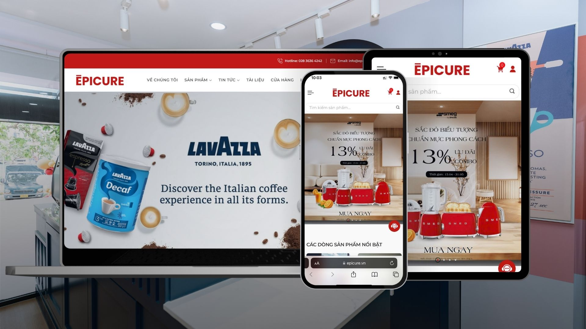
01 · PROJECT OUTCOME
Một nền tảng mới cho chiến lược mở rộng
Case study tập trung vào phạm vi, hệ thống và kết quả triển khai có thể xác minh; không sử dụng tỷ lệ traffic retained, số lượng URL redirect hoặc số sản phẩm migration do không có số liệu chính xác.
02 · CONTEXT & CHALLENGE
Website cũ không còn phù hợp với mô hình mới
Khi EPICURE mở rộng từ cà phê và máy pha cà phê sang thiết bị gia dụng cao cấp, cấu trúc WordPress cũ—vốn được thiết kế chủ yếu cho danh mục cà phê—không còn phản ánh đúng chiến lược đa thương hiệu và trải nghiệm mua hàng.
- Định vị kinh doanh và cấu trúc danh mục cần được xây lại.
- Nội dung, hình ảnh, thông số và URL cũ cần được kiểm kê, làm sạch và migration.
- Thay đổi nền tảng tạo rủi ro đối với indexed pages và organic traffic.
- Thiết kế, SEO, Marketing, E-commerce, Agency và các bên nội bộ có ưu tiên khác nhau.
- Website cũ vẫn phải phục vụ khách hàng trong thời gian xây dựng.
03 · OBJECTIVES
Năm mục tiêu chuyển đổi
Brand Repositioning
Chuyển website từ định vị chuyên cà phê sang nền tảng đa thương hiệu và ngành hàng.
Information Architecture
Xây cấu trúc phù hợp với máy pha cà phê, gia dụng nhỏ, gia dụng lớn và các nhóm liên quan.
Shopping Experience
Cải thiện khả năng tìm kiếm, khám phá, cân nhắc và mua hàng trực tiếp.
SEO Equity
Kiểm kê nội dung và thiết lập redirect mapping để hạn chế rủi ro trong migration.
System Integration
Kết nối website với CRM và hệ sinh thái quản trị của EPICURE.
04 · STRATEGIC APPROACH
Business-led replatforming
Business-led Replatforming
Việc chuyển nền tảng phục vụ chiến lược đa thương hiệu, đa ngành hàng và khả năng bán hàng trực tiếp—không chỉ là thay đổi công nghệ.
Scalable Information Architecture
Tái cấu trúc bốn nhóm danh mục chính và tạo khả năng mở rộng khi bổ sung thương hiệu hoặc ngành hàng.
SEO-safe Migration
Kiểm kê nội dung và URL có giá trị; phối hợp redirect mapping để hạn chế mất indexed pages và organic traffic.
Conversion-focused UX
Ưu tiên tìm kiếm, so sánh, thông tin sản phẩm, thêm vào giỏ và checkout trên desktop lẫn mobile.
Integrated Digital Ecosystem
Định hướng website thành điểm chạm trung tâm kết nối sản phẩm, CRM, E-commerce và các kênh digital.
05 · MY ROLE
Marketing-side Project Owner & Project Coordinator
Planning & Coordination
- Tổng hợp business requirements và scope cho thiết kế, phát triển và SEO.
- Điều phối Agency, SEO team, Marketing, E-commerce và các bên nội bộ.
- Theo dõi timeline, dependencies, feedback và các vấn đề phát sinh.
- Quản lý review, phê duyệt và bàn giao.
IA & Content Migration
- Kiểm kê và tái cấu trúc thông tin thương hiệu, danh mục, sản phẩm và hành trình.
- Xây taxonomy cho nhóm sản phẩm mới.
- Chuẩn hóa tên, mô tả, thông số, hình ảnh và cấu trúc nội dung.
- Phối hợp lập redirect mapping giữa URL cũ và mới.
UX/UI & E-commerce
- Review wireframe, layout, navigation và customer journey.
- Đề xuất menu, category page, product page, filtering và CTA.
- Xác định yêu cầu search, product filter và purchase flow.
- Kiểm tra tính nhất quán với Brand Guidelines.
Migration, UAT & Launch
- Phối hợp kiểm tra dữ liệu và nội dung sau migration.
- Thực hiện UAT trên desktop và mobile.
- Kiểm tra navigation, CTA, form, checkout, search, filter và responsive layout.
- Theo dõi launch checklist và lỗi sau triển khai.
06 · MIGRATION PROCESS
Từ nền tảng cũ đến launch
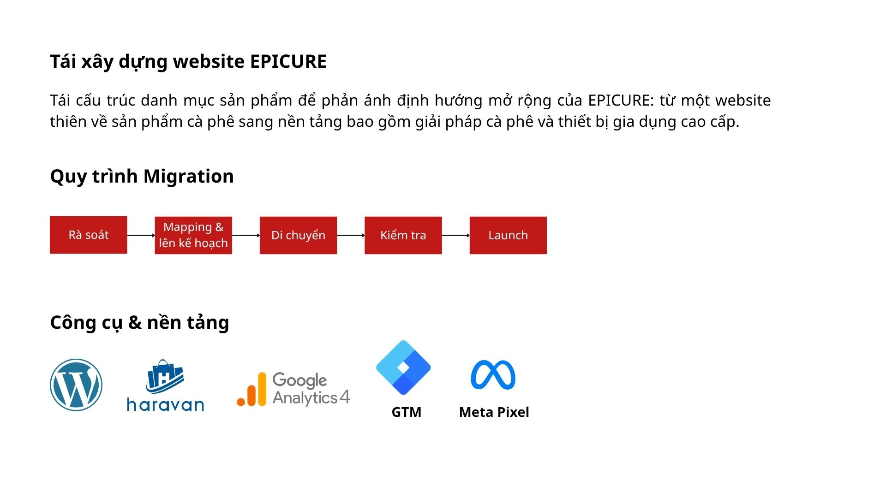
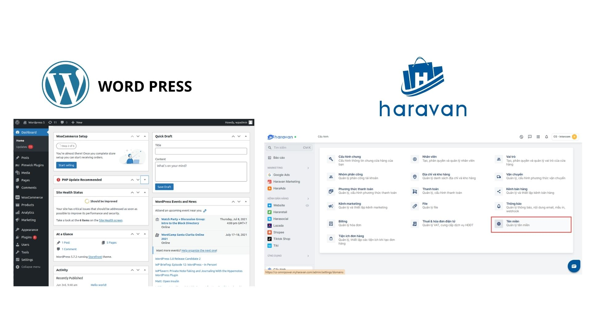
07 · PLANNING EVIDENCE
Cấu trúc và hành trình được làm rõ trước khi build
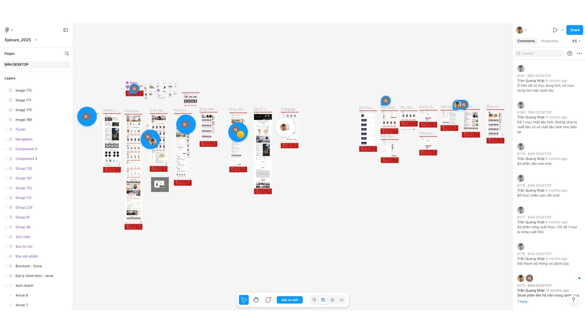
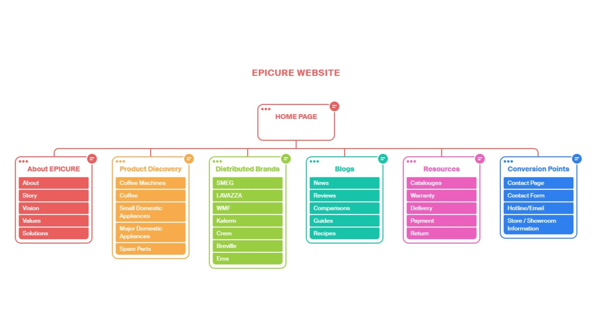
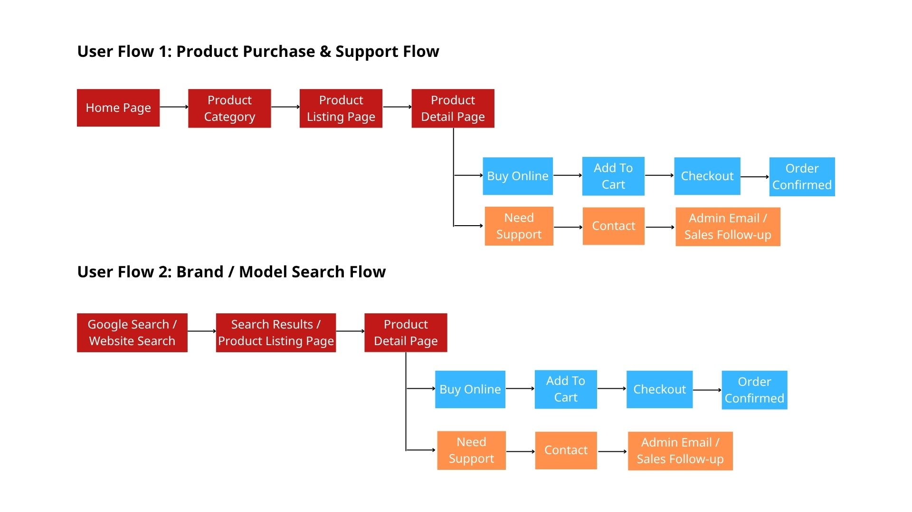
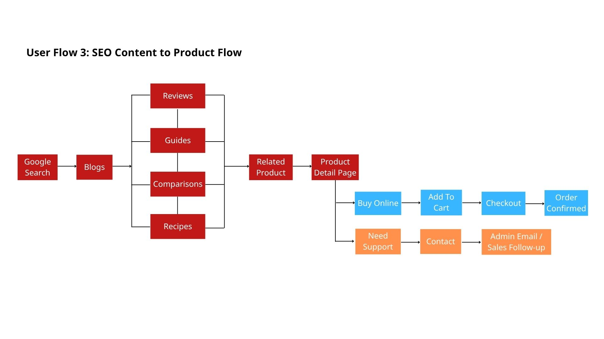
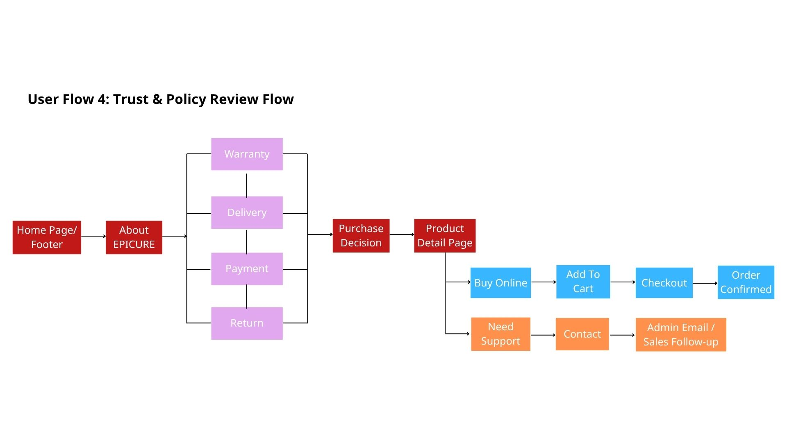
08 · DIGITAL EXPERIENCE
Các điểm chạm chính sau replatforming
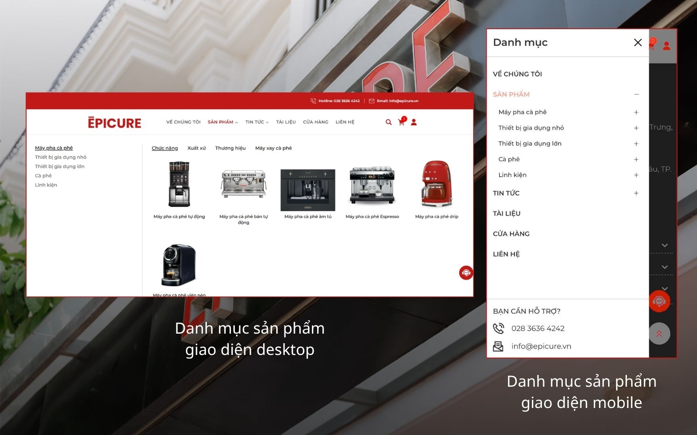
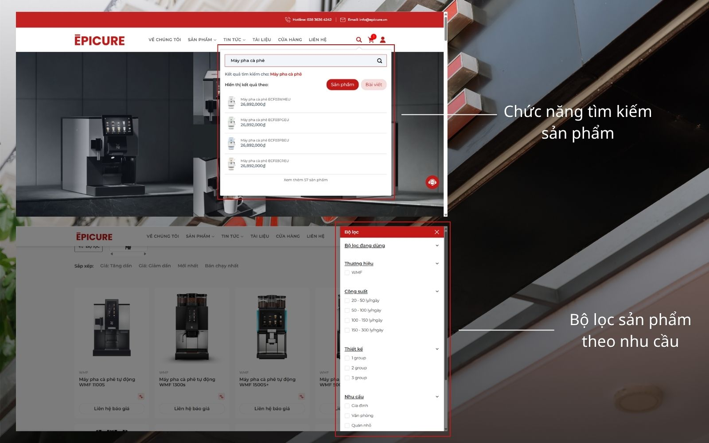
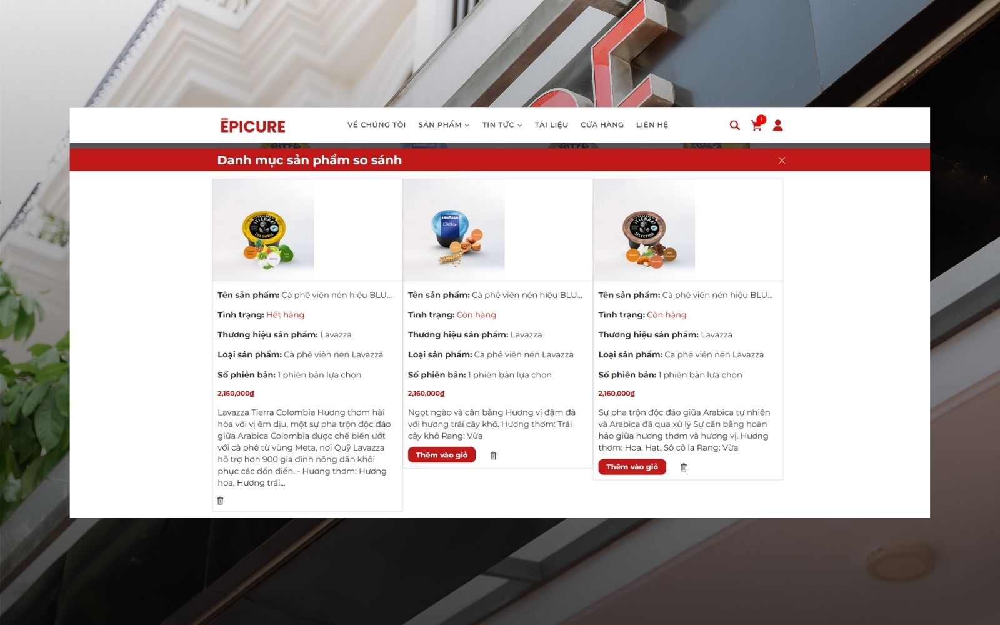
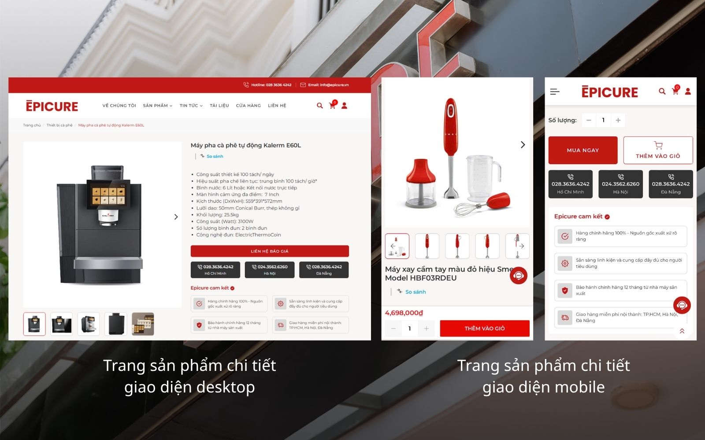
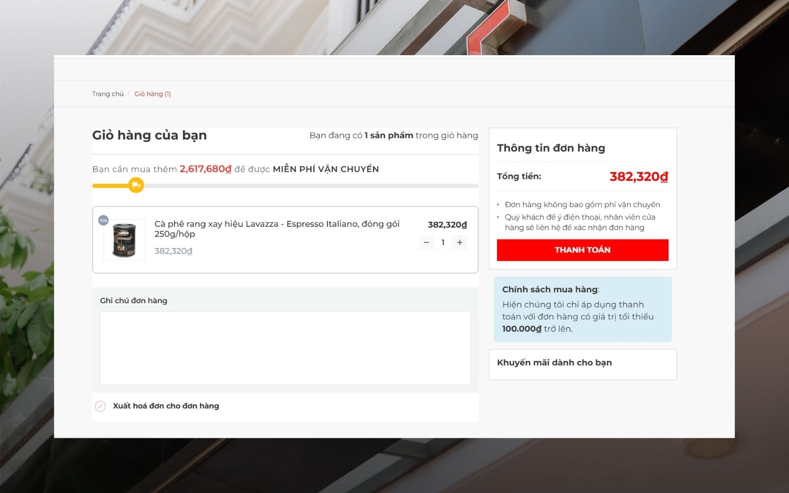
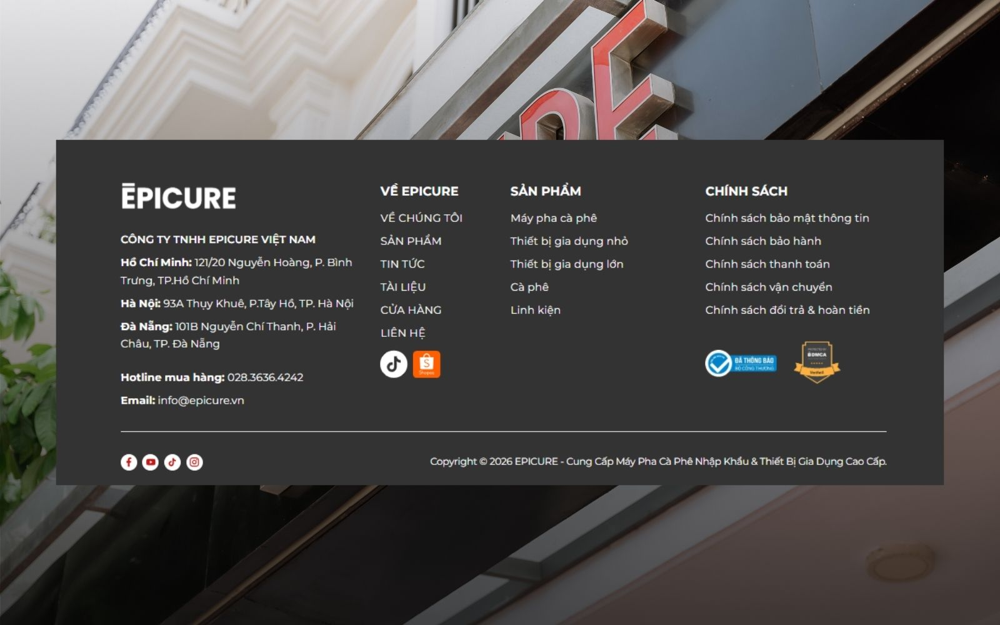
09 · RESULTS
Kết quả hệ thống
- Hoàn thành chuyển đổi website từ WordPress sang Haravan trong giai đoạn 07–11/2025.
- Tái cấu trúc danh mục thành bốn nhóm sản phẩm chính.
- Bổ sung search, product filter, cart và direct checkout.
- Chuẩn hóa product page về nội dung, thông số, hình ảnh và CTA.
- Hoàn thiện responsive experience và UAT trên desktop, mobile.
- Phối hợp kết nối website với CRM và quy trình lưu trữ dữ liệu khách hàng.
- Triển khai content migration và redirect mapping để hỗ trợ bảo toàn SEO equity.
10 · KEY LEARNING
Ba bài học cốt lõi
Scope alignment before design. Wireframe, technical requirements, SEO requirements và acceptance criteria cần được thống nhất trước thiết kế chi tiết.
Migration needs cross-functional governance. Mỗi hạng mục cần owner, reviewer, approver và checkpoint rõ ràng.
Testing and contingency must be planned. UAT, redirect validation, content QA và khoảng thời gian dự phòng cần có trong timeline từ đầu.